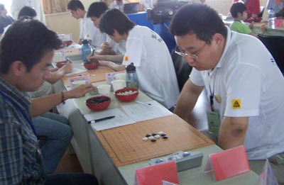
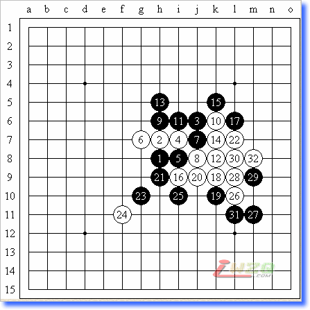
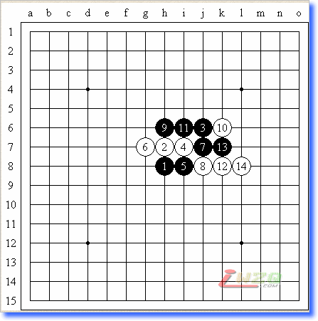
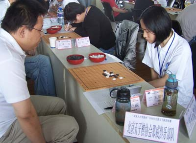
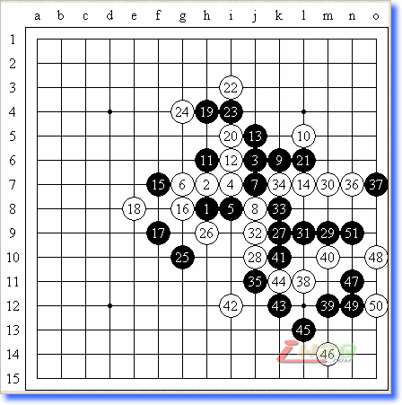
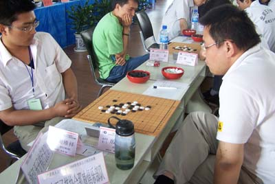
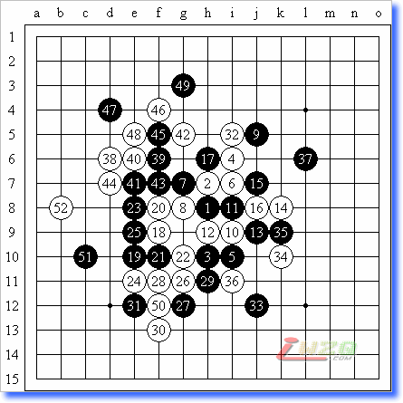

殷立成2008全团赛回顾——自我感觉及格
#1 殷立成2008全团赛回顾——自我感觉及格 作者：有志青年 发表时间：2008-6-14 10:09:50
【有志注：2002年第一届全国赛冠军殷立成于奥运年再次复出参加全国团体赛，本文是殷老师赛后自述文章，原文刊载于中国连珠网，原文网址：http://www.rifchina.com/Article/ShowArticle.asp?ArticleID=4925】
许久不打比赛的我又一次的坐在棋盘边，随着比赛的进程，自己似乎淡漠的心境又重新被唤醒，并熊熊燃烧了起来。因而提起笔来，第一时间写一写自己的比赛感受，重温一下带给自己激情与快乐的时光。
先说一个小插曲，本来我是打4台的，不想组委会按报的名单排表了，这样我一台了！
6月7日 9：00 第一盘 平静之局


对手保定2队的武成岩，根据一般比赛的规律（设种子队），比赛前几轮的对手应该较弱，但远离比赛的我，时时提醒自己不要大意。实战，对手对棋的先手认识上有些不足，11手丢失先手，正常应该在F7点控制大局，随后13手更是雪上加霜的下法，白棋很容易的就取胜了。如13手走白棋14的位置，见分析图（下图）白14于L8点，局面黑棋困难，但说胜还早！或许有机会！

6月7日 13：00 第二盘 自信之局


对手江苏一队的王烨林（是个很漂亮的姑娘，嘿嘿，后来把“小猪”一劈两半，太厉害了！要学习呀！），赛前李瑞凡提示我对手的攻击力不足，可以考虑开浦月一类的强开局，但我想能来比赛的棋手，应该都有基础，况且第一轮已经过去，应该不会太弱，而且自己认为自己应该还不会倒吧（哈哈，差点！），实战想走一个控制先手的变化，就算没优势，和对手比控制点的选择（自信自己强）。实战白14走了一个很诱惑点，但实际上还需忍耐一下，走黑23的位置好，这样黑棋全局的连接不是很好，正是14的诱惑，白棋将左侧全部让给了黑棋，当然不能说黑棋就胜了，我一直认为疏星一般情况下黑连续2手都未必攻死白棋。只不过黑棋这样机会大了许多。实战黑棋17尝试的进攻。白18好棋，对手的控制感很好！实战黑19早了一点，似乎在D8点继续试探为好，实战有点想直接做大优势，将其打败！（哈哈，自大了！）通过长考白走了20极强的一手，有了20一手白棋就可于21发动进攻，同时黑棋如果继续进攻，白棋G4点防守是很强烈的一手。看到这样的情况，我决定拉长战线，21忍耐的防守了一下。22的防守似乎有得商量，跳防后也不干净。24唯一了。黑棋25、27控制大局的下法！28强防！29黑棋尝试进攻，试图找到一些可利用的机会，黑35后局部没杀，但获得与左边链接的机会！黑棋依旧先手控制局面。39试应手，局部来说考虑到对42点的利用，为此，黑棋就是想先手控制住右下的局面，白棋40计算失误！大概想死守住局部！牵制42点的利用，不想被黑棋杀之。
6月7日 16：00 第三盘 经验之局


对手浙江队的谢维祥，赛前浙江调整台次（不知道呀！哈哈，没人说给我听！），这样我实际迎战浙江队的原二台，当坐在棋盘前看着对手开出瑞星后，自己开始分析（我喜欢坐在棋盘前分析棋局），其实自己很长时间不下棋了，计算也许还在，但知识量太少了，考虑到又是怎么一个强队，浙江队员的知识量之强，不入对手的套路是我主要的考虑（旁边的曹冬进套了，哈哈，没想到熟鸭子也会飞，飞了！），所以我实战选择了白12这个弱点，这个点我很早前就下过，感觉黑棋进攻手段很多，但也不是一下就死的局面，实战双方交换到32，基本就是我的预想图，现在黑棋机会多多。实战33想简单了，被34一手将棋盘右侧全部守住了，估计黑棋必是心疼死了，黑37次序失误，应该先在左边交换，无论怎么交换都是黑棋好下的局面，38好棋！利用先手的机会控制住了左边，白棋在这里的交换目的，主要是先手控制住黑棋优势，然后回手防守黑棋37，实战交换到50，白棋成功的削弱了黑棋优势，51随手，估计想通过活三看看能不能抢到先手，不想不白棋V抓44禁。这样自己利用自己的经验又下一城。
局后才知道，自己战胜的是网路红人——棋情老师。（哈哈，实话说蛮高兴的！同时说明自己够落伍的了！以后要多去网上看看！）
&nbs
#2 Re:殷立成2008全团赛回顾——自我感觉及格 作者：方圆之外 发表时间：2008-10-20 17:15:47
 54手算错``
54手算错``
#3 Re:殷立成2008全团赛回顾——自我感觉及格 作者：炫飞青瞳 发表时间：2012-1-21 2:17:57
比赛场地太简陋了，真像在摆小摊呢

#4 Re:殷立成2008全团赛回顾——自我感觉及格 作者：小元 发表时间：2012-1-21 10:49:41
楼上有挖坟嫌疑，不过貌似这次比赛场地是最近几年来环境最差一次。